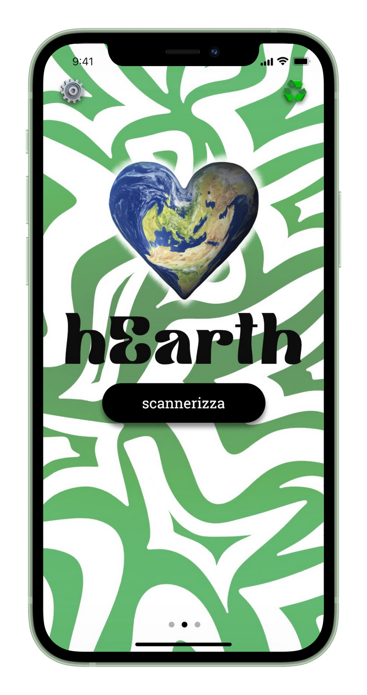
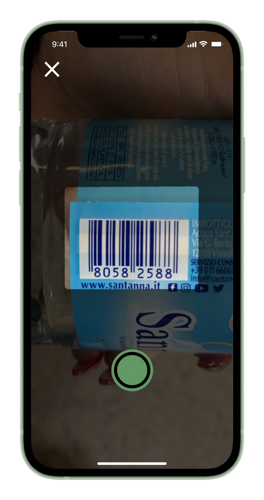
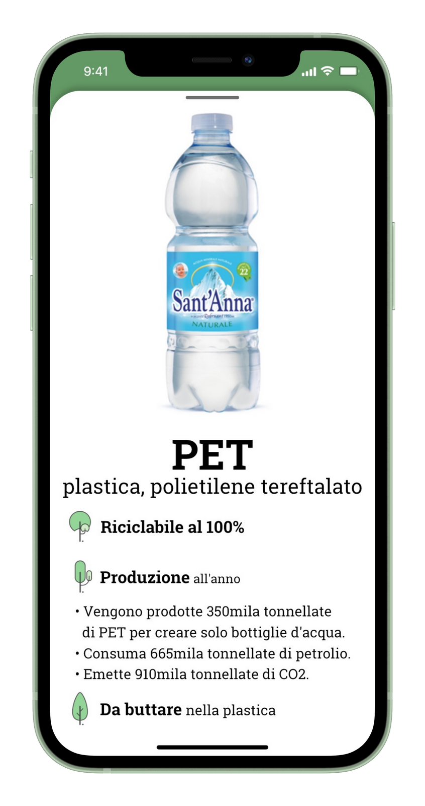
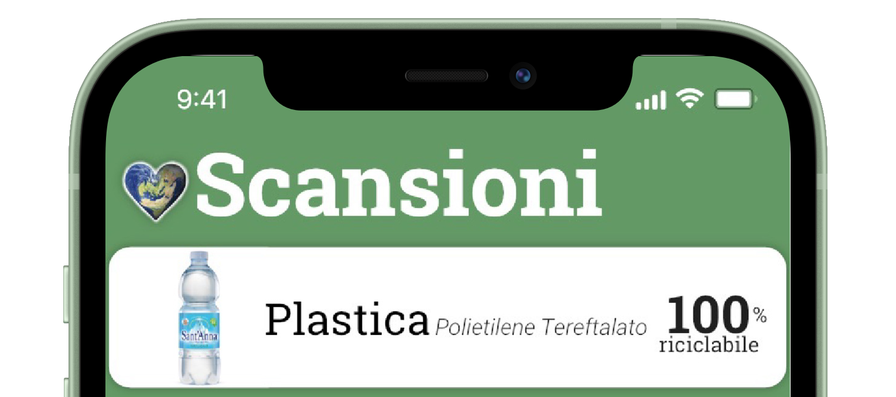

La plastica è la droga di ogni giorno. Gran parte degli oggetti che ci circondano sempre sono composti da questo materiale difficile da smaltire che sta inquinando l'ambiente.
La missione: diminuire l’impatto ambientale dei materiali plastici. La nostra visione è un mondo in cui la plastica sia sostenibile: facile da creare, riciclare e smaltire. Crediamo che esistano vari modi per diminuire l’impatto ambientale di questo materiale, come il riciclo o con una produzione più sostenibile. Pensiamo che responsabilizzando le persone le cose migliorerebbero.
Quindi abbiamo deciso di creare hEarth un'app che rende più consapevole l'utente di come ciò che compra ogni giorno ha impatto sull'ambiente. Divulgare informazioni sull'inquinamento da plastica è il nostro primo contributo per compiere questa missione. Per raggiungere l'obbiettivo abbiamo bisogno del tuo aiuto, scarica l'app e compra prodotti più ecocompatibili!
Scansiona i codice a barre e scopri di cosa sono fatte le confezioni dei prodotti che acquisti

Apri

Scansiona

Scopri

Salva
L'inquinamento da plastica
L'inquinamento da plastica è diventato uno dei temi ambientali più pressanti: la produzione di oggetti in plastica usa e getta sta soverchiando la nostra capacità di gestirla.
Metà di tutta la plastica prodotta è stata realizzata solo negli ultimi 15 anni; La produzione è aumentata in modo esponenziale dai 2,3 milioni di tonnellate del 1950 ai 448 milioni di tonnellate del 2015. Un dato che dovrebbe raddoppiare dal 2050.
Ogni anno circa 8 milioni di tonnellate di rifiuti di plastica finiscono dalle nazioni costiere negli oceani. Equivale a buttare cinque buste di immondizia ogni 30 centimetri di costa in tutto il mondo.
Spesso le plastiche contengono additivi che le rendono più resistenti, più flessibili e durevoli. Molte di queste sostanze, però, possono prolungare la vita dei prodotti nel momento in cui vengono gettati via. Si stima che alcuni possano durare almeno 400 anni prima di degradarsi.
Noi siamo studenti dell'istituto tecnico "Guglielmo Marconi" di Dalmine. Abbiamo realizzato questo progetto a seguito di un'iniziativa didattica della scuola che comprendeva 20 challenge tra cui la nostra, "CHALLENGE PLASTIC FREE: Un mondo senza plastica sfida fattibile?".